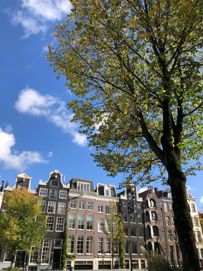
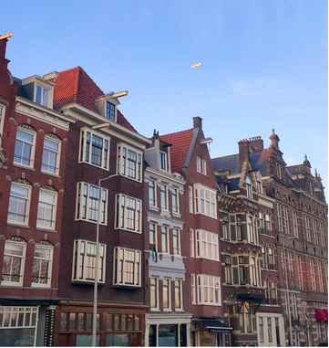
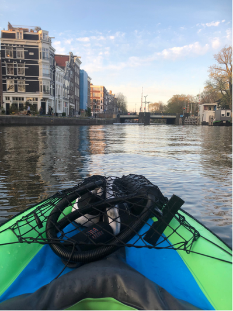

amsterdam on foot, by bike and kayak
three vignettes documenting the traversal of three unique mobility-scapes, each embodying their own sensory and social experiences.
biking
A cool morning breeze brushes my face as I begin my cycle towards Roeterseiland. I weave through the narrow streets of Amsterdam, moving with a sense of speed and urgency that isn’t truly necessary. The irregular brick road sends vibrations through my body; my mental state intensifies as I observe my surroundings before crossing the road. I am reminded of local cycling etiquette by the sharp tone of a bike bell—I swiftly move to the right. The contrasting scents of pastries and smoky fumes fill my nostrils as I move away from a residential area into the inner city. My senses are heightened as I move across a tram track with intent, narrowly avoiding the embarrassing mistake of wedging my wheel. I approach an intersection, following the crowd to tactically cross the road (despite a red light) to avoid stoppage in motion.


on foot
As I walk, I fully absorb the city. My sight is locked onto beautiful Dutch façades, the rings of bicycle bells and tram wheels clattering fill my ears, and the smells of baked goods and coffee enter my nostrils. I enjoy observing conversations of different languages, yet feel a sense of shame as rowdy British tourists noisily pass by. I relish the slower pace of movement, where I’m more appreciative of my surroundings, wondering to myself - why don’t I do this more often? Then I am reminded: the busy pavements of Amsterdam bring a sense of frustration as my pace is constantly disrupted by varying speeds of walkers, and large groups of people hoarding the pavement leave me unable to fulfil my fast-walking tendencies. A stranger and I share a dance of indecisiveness as we awkwardly shuffle past each other before I cross the road. My senses are amplified as I check twice for cyclists and narrowly avoid a stream of bikes
paddling
I awkwardly squeeze myself into my kayak, much to the amusement of two old men who seem convinced I’d gone mad. The sun glares into my eyes and splashes of water sprinkle me as I set into a slow paddling rhythm. My position in the water offers an alternative perspective of the city, bicycles and pedestrians pass overhead as I drift under bridges, and I receive an earthy, damp scent from the canal wall. The constant, chaotic motion of the street is replaced by slow-moving boats, which come and go every few minutes and send a small wake my way. I adjust my position in the water, sticking to the right, scanning both ahead and behind for boats. I experienced a brief conversation with a local man on his canal boat who was pleased to see me and commended me for kayaking the canals. As I approached a bridge, a boat gave me a honk, signalling me to pass through. I turn into the wide-stretching Amstel, experiencing a wave of intimidation, where I feel exposed yet unnoticeable amongst a ‘sea’ of ships. My senses are on high alert as I scan the water constantly and quickly paddle downstream. I make a sharp turn into the safe-haven that is the Amsterdam canals
